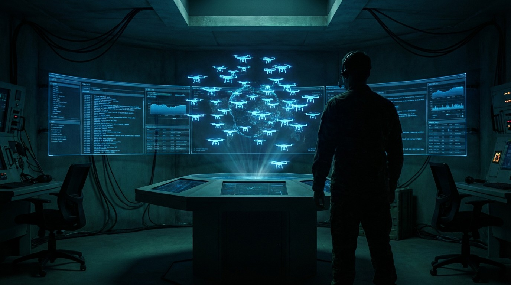

Ukraine Has 5 Million Drones and the World's Only Real Combat AI Dataset. Now It's Selling Access.
On March 13, 2026, Ukraine opened the world's first battlefield AI training data marketplace. Five million combat drones generated the only real-world high-intensity warfare dataset on earth. No simulation. No synthetic data. Allied governments can now buy access to millions of annotated combat frames.

Five million drones. One dataset. Zero comparable alternatives anywhere on Earth.
On March 13, 2026, Ukraine's Ministry of Defense opened the world's first battlefield AI training data marketplace. Allied governments and defense companies can now purchase access to millions of annotated combat frames generated by the largest drone fleet ever deployed in conventional warfare. Not simulated environments. Not synthetic training data. Not peacetime exercises. Real combat, real targets, real outcomes, captured continuously from active frontlines and processed through Ukraine's DELTA battlefield management system using neural networks for real-time target detection.
Deputy Defense Minister Myronenko put the fleet size at five million drones and counting. That number will be contested. But the underlying asset is not: Ukraine possesses the only high-intensity conventional warfare AI training dataset in existence. Every other military in the world is training its autonomous systems on data that is either synthetic, decades old, or collected from asymmetric conflicts against adversaries with no air defense. Ukraine's data comes from fighting a near-peer military equipped with modern electronic warfare, counter-drone systems, and its own AI capabilities.
Nobody else has this. Nobody else can get it without fighting a similar war.
The $/Kill-Chain-Compression Calculation
A single first-person-view drone costs between $500 and $2,000. A single main battle tank costs $3 million to $10 million. That is a 6,000-to-20,000x cost asymmetry, and Ukraine has demonstrated it thousands of times over three years of footage now available to buyers.
Scale the economics. Ukraine's 2025 procurement target was 4.5 million FPV drones. At $500 per unit, that entire fleet costs approximately $2.25 billion. Fifteen F-35 fighter jets cost the same. Fifteen aircraft, or 4.5 million autonomous-capable weapons platforms. That comparison reframes every procurement debate in every defense ministry on the planet.
And the kill chain is compressing. On January 13, 2026, Auterion demonstrated the first U.S. kinetic drone swarm strike at Camp Blanding, Florida: one operator controlled three drones that simultaneously engaged three separate targets. One human, three kills, one command cycle. Two years ago that required three operators, three separate authorization chains, and three sequential engagements.
Pentagon planners noticed. The FY2026 budget request allocates $13.4 billion for AI and autonomy, a $2.2 billion increase over FY2025. Defense Secretary Hegseth's January 2026 memo directed the Pentagon to become an "AI-first warfighting force across all components, from front to back." The Replicator Initiative has contracted for 2,500 to 3,000 autonomous systems, predominantly Switchblade 600 loitering munitions.
All of these programs need training data. Ukraine is selling exactly that.
Why the Data Cannot Be Replicated
Generating a comparable dataset without Ukraine's marketplace would require one of two things: fighting a high-intensity conventional war, or spending 5 to 10 years and billions in R&D attempting to simulate one.
Simulation falls short because battlefield AI must handle conditions that synthetic environments cannot faithfully reproduce. Electronic warfare interference varies by weather, terrain, and enemy adaptation. Target identification degrades under smoke, debris, and thermal distortion. Combatants learn and change tactics in response to drone operations. Ukraine's dataset captures all of this because it is all of this.
DELTA processes drone feeds through neural networks trained on real-world engagement data: target recognition, damage assessment, route planning, electronic warfare evasion. When Ukraine's autonomous drones defeat jamming without human guidance, the model weights reflect thousands of prior successful and unsuccessful navigation attempts against Russian EW systems.
A $500 FPV drone is commodity hardware any country can manufacture. A software stack trained on data only Ukraine possesses is not. That distinction is why the marketplace matters more than the drones themselves.
Strongest Counterargument
Selling battlefield AI data normalizes autonomous killing and accelerates an arms race that no existing treaty can govern.
State this clearly: the data marketplace creates a commercial incentive to generate more combat data. More combat data means more drone strikes, more annotated frames feeding back into improved autonomous systems. Each improvement increases the asymmetric advantage. Each advantage increase makes every nation that lacks it more desperate to acquire it. Proliferation becomes self-reinforcing.
No international framework constrains this transfer. A decade of talks at the United Nations Convention on Certain Conventional Weapons produced no binding agreement on autonomous weapons. China tested counter-swarm systems in 2025. Russia is accelerating its own autonomous programs using battlefield data from the same war. Every dataset sold makes the next escalation more efficient.
And there is a darker structural incentive: if Ukraine's combat data becomes a revenue stream, the financial logic of continuing to generate that data aligns with the financial logic of continuing the war. That is an uncomfortable alignment, and any honest analysis of the marketplace must acknowledge it.
But Ukraine did not start this war and cannot afford to fight it with one hand tied. Withholding data while Russia develops autonomous systems from its own combat experience is not moral neutrality. It is unilateral disarmament of the defending party. And the data exists regardless of whether it is sold. Allied nations can either share a common AI training foundation and develop interoperable safety protocols, or each country develops fragmented, incompatible autonomous systems trained on inferior data. Shared data may actually reduce the probability of autonomous accidents by establishing common recognition baselines and engagement boundaries.
What We Do Not Know
Ukraine's five-million-drone figure comes from Deputy Defense Minister Myronenko and has not been independently verified. Drone counts in an active war zone are inherently difficult to audit. The number likely includes units destroyed, lost, or no longer operational.
"Millions of annotated frames" remains vague. Annotation quality, labeling consistency, and potential bias in the dataset are unknown. Frames captured by drones that survived engagements overrepresent successful attacks and underrepresent the conditions that lead to drone losses. Any buyer's AI team should account for this survivorship bias.
No external audit of the marketplace's security architecture, access controls, or data provenance verification has been published. Ukraine states it meets NIST standards. That claim is unverified.
Pentagon's $13.4 billion AI and autonomy allocation is a budget request, not an appropriation. Congressional approval is pending and subject to political dynamics that shift between administrations. A change in White House priorities could redirect those funds entirely.
Auterion's one-operator, three-drone swarm demonstration occurred on a controlled military range, not in contested airspace against an adversary with counter-drone capabilities. Range demonstrations and combat deployments are separated by engineering challenges that press releases do not capture.
No public information exists about the marketplace's pricing structure, access tiers, or contractual terms. Whether allied governments pay per-frame, per-model-training-run, or through bilateral defense agreements is unknown. The commercial viability of the marketplace as a revenue source for Ukraine remains unverifiable.
The Bottom Line
Ukraine did not set out to build the world's most valuable AI training dataset. It set out to survive. Three years of high-intensity drone warfare against a near-peer adversary produced a byproduct that no peacetime R&D program can replicate: millions of annotated combat frames from real engagements against real electronic warfare, real air defenses, and real human combatants adapting in real time.
On March 13, Ukraine made that byproduct available for purchase. Whether this represents pragmatic defense cooperation or the opening of an autonomous weapons bazaar depends on how much time you believe the world has to develop governance frameworks for technology that is already deployed, already killing, and already for sale.